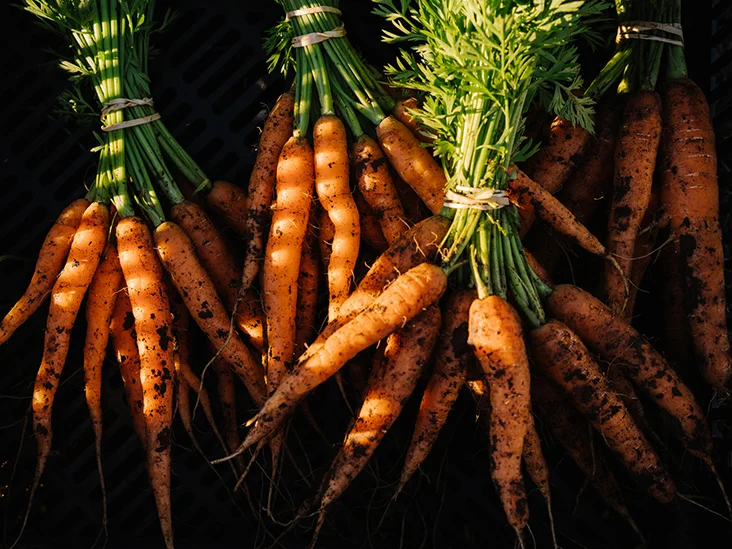

Question 2
| Activity | Date |
|---|---|
| First day to enrol fror re-enrolling (continuing students) | 22 Nov 2022 |
| Orientation |
During Week of 18 July 2022 Visit Orientation page for more details |
| Lectures Commence (weeks 1-9) | 25 Ju - 23 Sep 2022 |
| Last day to enrol/add subjects yourself | 05 Aug 2022 |
| Last day to enrol/add subjects with Head of Students approval | 23 Aug 2022 |
Question 3
| Name | Health Benefit |
|---|---|
Mango |
One of its most impressive nutrient facts is that just 1 cup (165 grams) of fresh mango provides nearly 67% of the DV for vitamin C. This water-soluble vitamin aids your immune system, helps your body absorb iron, and promotes cell growth and repair (1Trusted Source, 4Trusted Source, 5Trusted Source, 6Trusted Source). Mango is also a good source of the minerals copper and folate, which are especially important nutrients during pregnancy, as they support healthy fetal growth and development www.healthline.com |
Banana |
One medium-sized banana provides approximately 13% of your daily manganese needs. Manganese helps your body make collagen and protects your skin and other cells against free radical damage. A medium-sized banana will provide around 320-400 mg of potassium, which meets about 10% of your daily potassium needs. Potassium helps your body maintain a healthy heart and blood pressure. In addition, bananas are low in sodium. The low sodium and high potassium combination helps to control high blood pressure. www.healthxchange.sg |
Plum
|
Phytochemicals and nutrients in plums lower the inflammation that triggers heart disease. Anxiety. A plum a day may keep anxiety away. When your antioxidants are low, anxiety can be high. Constipation Relief. Plums, like prunes, can also help keep things moving through your system. They have a lot of sorbitol, a sugar alcohol that acts as a natural laxative. High blood pressure and stroke. The potassium in plums is good for blood pressure control in two ways. It helps your body get rid of sodium when you pee, and it lessens tension in the walls of your blood vessels. When your blood pressure is lower, your odds of getting a stroke go down. Rich in antioxidants. These substances protect the body against the cell and tissue damage that can lead to diabetes, Alzheimer's disease, Parkinson's disease, and cancer. |
Celeriac |
Celeriac has green leaves and stalks that grow above ground and roots with a rough, brown skin that grow underground. While farmers grow celery for its edible leaves and stalks, they grow celeriac for its roots.
Celeriac potentially boosts bone and heart health, and it may reduce the risk of diabetes. www.medicalnewstoday.com |
Turnip |
Turnips (Brassicarapa) are a root vegetable and member of the cruciferous family, along with other vegetables like bok choy, Brussels sprouts, and kale.
They're one of the world's most important vegetable crops, as they're used to feed both humans and cattle
www.healthline.com/nutrition/turnip-nutrition |
Swiss Chard |
Swiss chard is an excellent source of vitamin A and vitamin K and a good source of vitamin C and magnesium. Swiss chard also contains the antioxidants beta-carotene, lutein, and zeaxanthin. Vitamin A plays a significant role in normal formation and maintenance of many organs including the heart, lungs and kidneys. It is also used to support immune function, vision and reproduction. Vitamin K assists with blood clotting and bone building. Vitamin C, an antioxidant, repairs and maintains bones, teeth and cartilage. It also plays a role in wound healing and aids in the absorption of iron. https://lacrosseallergy.com |
Endive |
Endive is almost all water (95%) which makes it a great diuretic. It helps eliminate all the toxins from your body. Endive is prescribed as a treatment against cystitis, and to persons who don’t urinate enough. Endive will only provide you with 17 kcal / 3.5 oz (100 g) and 0.2 g lipids. This “light” vegetable is perfect as a part of low-calorie diets. On top of that, it quickly leads the stomach to signal that it is satiated. www.vegetables.co.nz |
Carrot |
They're a weight-loss-friendly food and have been linked to lower cholesterol levels and improved eye health. What's more, their carotene antioxidants have been linked to a reduced risk of cancer. Carrots are found in many colors, including yellow, white, orange, red, and purple. Orange carrots get their bright color from beta carotene, an antioxidant that your body converts into vitamin A. www.healthline.com |
Beetroot |
Beets have many helpful plant compounds that reduce inflammation and protect cells from damage. Some of the other health benefits of beetroot include: Beetroot and its juice help your heart and lungs work better during exercise. Nitric oxide from beets increases blood flow to your muscles. Some athletes eat beetroot or drink beet juice when exercising to improve their performance. Beets are rich in folate (vitamin B9) which helps cells grow and function. Folate plays a key role in controlling damage to blood vessels, which can reduce the risk of heart disease and stroke. |
Zucchini |
Zucchini is high in antioxidantsTrusted Source and might help protect a person from the followingTrusted Source health problems:
|